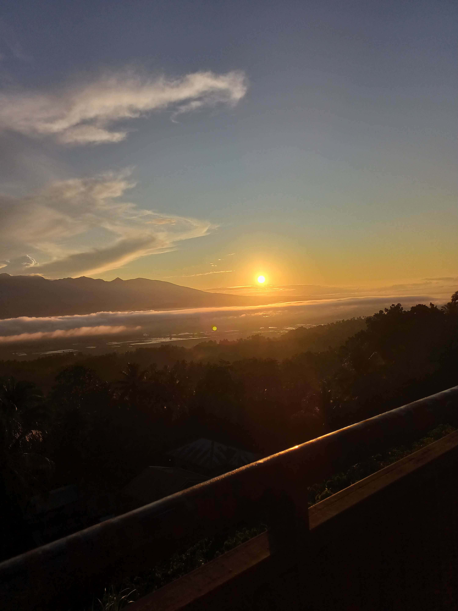

This is the mountain view in Tukuran, Zamboanga Del Sur, Philippines. This place is rich in expansive rice fields, fresh fish from local fishermen,mountains, and clean beaches along the shore. The people here are welcoming, with a friendly nature that makes visitors feel comfortable. It’s a quiet, laid back area where you can enjoy the sight of rice paddies under clear skies, take short hikes on mountain paths, or spend time by the sea.
Watch more student content: Life of an IT Student